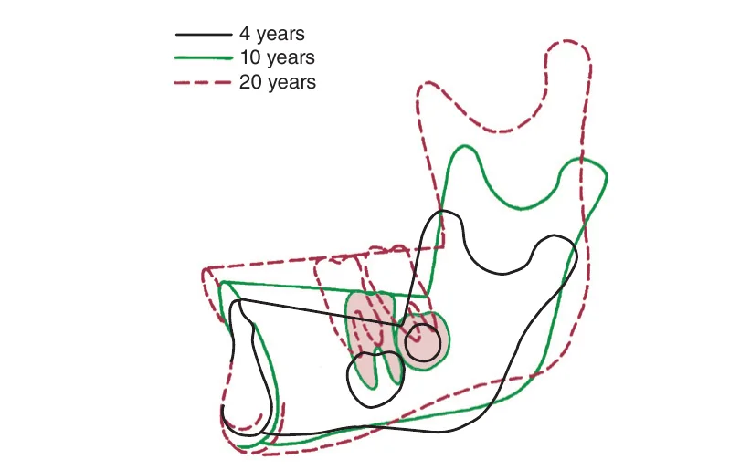

نسخه استخراجشده؛ ترجمه یا تأیید علمی انجام نشده است. وضعیت: captured
بیورک با کاشت ایمپلنتهای فلزی کوچک در فک بیماران و پیگیری چندساله، چیزی را نشان داد که تا آن زمان دیده نمیشد: فکها فقط بزرگ نمیشوند — میچرخند.
چرا این کشف اهمیت داشت؟ چون تا پیش از آن، سوپرایمپوزیشن سفالومتریک روی سطوح استخوانی انجام میشد و همان سطوح خودشان ریمادلینگ میشدند. ایمپلنت نقطهی مرجع ثابتی داد که با ریمادلینگ جابهجا نمیشود.
دو الگوی اصلی چرخش مندیبل:
و یک یافتهی مهم: مقدار چرخش داخلی واقعی اغلب چند برابر تغییری است که در زاویهی پلن مندیبولار دیده میشود، چون ریمادلینگ سطحی بخش زیادی از آن را میپوشاند.

| ویژگی | چرخش قدامی | چرخش خلفی |
|---|---|---|
| زاویهی پلن مندیبل | کم | زیاد |
| ارتفاع صورت قدامی | کوتاه | بلند |
| تمایل اکلوزال | دیپبایت | اپنبایت |
| چانه | برجسته | عقبرفته |
| عضلات جونده | قوی | ضعیف |
این جدول فقط توصیف نیست — منطق درمانی متفاوتی تحمیل میکند.
در چرخش قدامی، اکستروژن خلفی نسبتاً بیخطر است و بایت را باز میکند. در چرخش خلفی، همان حرکت صورت را بلندتر و چانه را عقبتر میبرد — و باید از آن پرهیز کرد. به همین دلیل تعیین الگوی عمودی، پیش از انتخاب مکانیک انجام میشود.
جبران دندانی-آلوئولار: دندانها با تغییر شیب و رویش میکوشند تماس اکلوزال را با وجود اختلاف اسکلتی حفظ کنند. در کلاس III اسکلتی انسیزورهای بالا پروکلاین و انسیزورهای پایین رتروکلاین میشوند؛ در چرخش قدامی، قدامیها بیشتر رویش میکنند و دیپبایت عمیقتر میشود. پیش از جراحی ارتوگناتیک همین جبرانها عمداً برداشته میشوند تا اختلاف واقعی آشکار شود و جراح بتواند فک را بهاندازهی کامل جابهجا کند.
چطور بدون ایمپلنت، جهت چرخش را پیشبینی کنیم؟ بیورک هفت نشانهی ساختاری معرفی کرد. مهمترینها برای چرخش قدامی:
عکس این نشانهها به چرخش خلفی اشاره دارد.
دو هشدار در کاربرد: این نشانهها احتمال را بالا میبرند نه قطعیت، و باید با هم ارزیابی شوند — یک نشانه بهتنهایی ارزش پیشبینی کمی دارد. بهترین استفاده از آنها، تنظیم انتظار و انتخاب مکانیک است، نه وعدهی دقیق دربارهی آیندهی صورت بیمار.
نوع سؤال: ساخت کلمه · 10 خانه
حروف منبع: ت · آ · ن · ه · ل · گ · ا · و · ی · ن